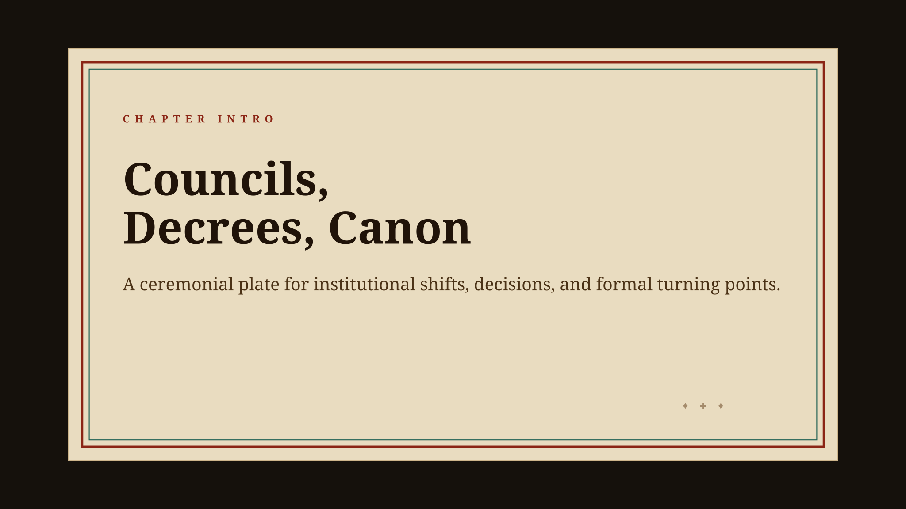
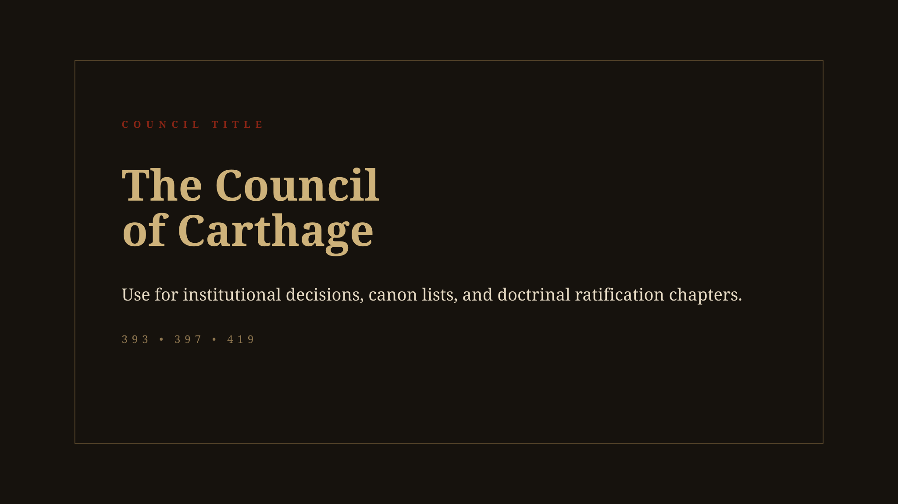

Automation Hub
The fastest path for image, video, and text AI tools. Use this to generate structured briefs and reusable prompt handoffs.
This page is the operating index for the documentary visual library: boards, reusable packs, sourcing batches, and tracker files all in one place.
Use this in order: review the boards, inspect the pack manifests, run a sourcing batch, and log the intake in the tracker before promoting anything into curated folders.



The fastest path for image, video, and text AI tools. Use this to generate structured briefs and reusable prompt handoffs.
The simplest low-overwhelm surface. Use this when you just want the next action without thinking about structure.
The shortest explanation of what the system is, what to ignore, and the safe routine to use when you come back to it.
A visual orientation page showing what each top-level folder does and the working order from review to collection to reuse.
A single real path through the system using a Jerusalem map pull so you can learn by doing one narrow batch.
Overall cinematic language: parchment, codex, titles, overlays, and immediate comps.
Geography language: routes, locator badges, markers, and conflict-zone map comps.
Witness cards, source intros, thesis plates, and textual coherence checks.

Institutional title systems now sit alongside the codex, map, quote, and overlay language.